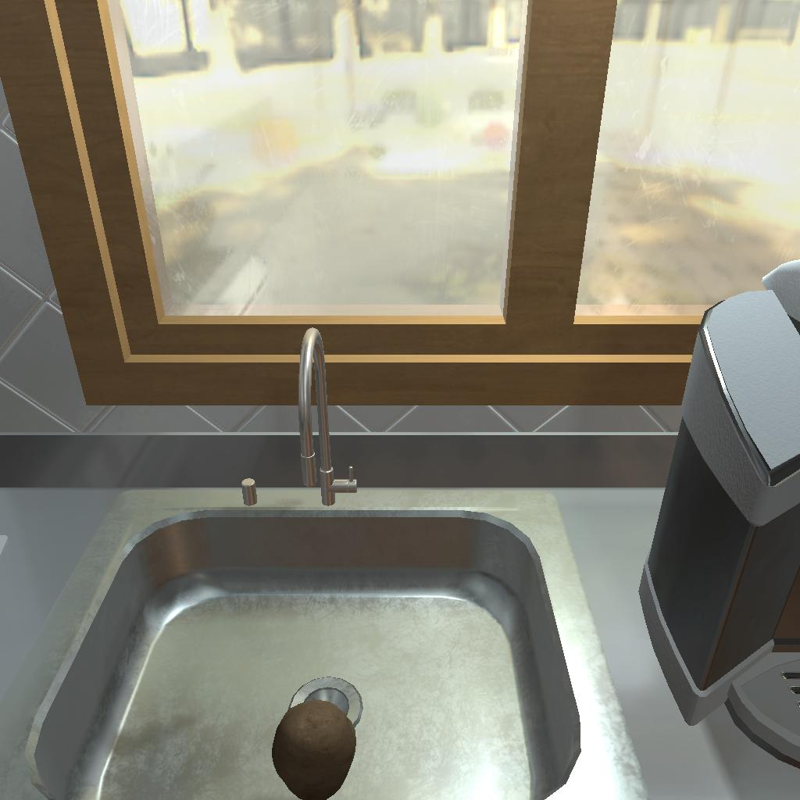

---------------------------------------------------------task: 12---------------------------------------------------------
--------------------------------------------------------------------------------------------------------------------------------------------------------------------
--------------------------------------------------------------------------------------------------------------------------------------------------------------------
Step:--------------------------------------------------------------------------5-------------------------------------------------------------------------------
----------------------------------------
VLM Prompt:
**Task**
Please perform as an embodied AI agent. Our final objective is to clean some tomato and put it in countertop. Below is the plan for completing the task, the current observation, alongside historical data and admissible actions for the next step. Please determine the best action for the next step!
**Plan**
Below is a detailed step-by-step plan to complete the task.
1. Find a tomato.
2. Pick up the tomato.
3. Find a sink or basin.
4. Clean the tomato with the sink or basin.
5. Find a countertop.
6. Place the cleaned tomato on the countertop.
**Current Observation**
Displayed is an image capturing the current position of the agent.
**History Information**
Displayed are the previous observations with their corresponding actions.
Current State 1:
1. Place: Kitchen (specific location not provided, but observation is of a sink)
2. Step Index in Plan: 1
3. Objects: Sink, Cabinets, Countertop, Fridge
4. Action: Go to fridge 1
Current State 2:
1. Place: In front of the fridge
2. Step Index in Plan: 2
3. Objects: Fridge, alphabet magnets, pictures
4. Action: Open fridge 1
Current State 3:
1. Place: Shelf
2. Step Index in Plan: Current step before taking the action
3. Objects: Tomato
4. Action: Take tomato 1 from shelf 1
Current State 4:
1. Place: Not specified (only mentions a shelf where a tomato was taken from)
2. Step Index in Plan: 3
3. Objects: Tomato, Potato
4. Action: Go to sinkbasin 1
Current State 5:
1. Place: Sink/Basin
2. Step Index in Plan: 4
3. Objects: Potato 1, Tomato (not present but required), Sink/Basin 1
4. Action: Put potato 1 in/on sinkbasin 1
**Admissible Actions**
(1): go to cabinet 1
(2): go to cabinet 2
(3): go to cabinet 3
(4): go to microwave 1
(5): go to cabinet 4
(6): go to cabinet 5
(7): go to cabinet 6
(8): go to countertop 1
(9): go to coffeemachine 1
(10): go to toaster 1
(11): go to countertop 2
(12): go to sink 1
(13): go to fridge 1
(14): take faucet 1 from sinkbasin 1
(15): take plate 1 from sinkbasin 1
**Analysis Guideline**
1. Analyze the **History Information** and determine our current step in the plan and our current place.
2. List all visible objects related to the task in the current observation.
3. Analyze the objects in the current observation based on the history and the requirements for the current step, and then determine if we can complete the step with the current observation.
4. Analyze and decide on the most appropriate action to take.
5. Summarize the analysis using the following format: "Analysis: [The summarization of the analysis], The Most Appropriate Action: (i which is the integer.): [Selected action]"
**Notes**
1. We must complete each step of the plan in order and cannot skip steps when the previous ones are not finished.
2. For "Go to" actions listed as "go to xxx [n]", interpret this as there are n distinct actions available: "go to xxx 1", "go to xxx 2", ..., "go to xxx n". Select one specific action from these options instead of using "go to xxx [n]".
3. If receptacles such as drawers, cabinets, and so forth are closed in the current observation, we may try to open them.
4. Pay attention to synonyms and ensure clarity in the terms used.
5. If there is no history available, we are at the first step and the current place is "Unknown".
6. The most appropriate action must be in the **Admissible Actions**, and we cannot generate a new action that is not in the **Admissible Actions**.
**Answer**
Please select the most suitable action by following the **Analysis Guideline**, keeping the above **Notes** in mind.
----------------------------------------
----------------------------------------
VLM Response:
Analysis: According to the History Information, we are currently at step 4 of the plan, which is to clean the tomato with the sink or basin. The current observation shows that we are at a sink, which is the required location for this step. The image displays a potato in the sink, but the tomato, which we need for this task, is not visible. The History Information indicates that we previously placed a potato in the sink, but we have picked up a tomato from the fridge. Therefore, we need to clean the tomato, not the potato. Based on the current observation and the plan, we should proceed to clean the tomato now that we are at the sink.
The Most Appropriate Action: (14): take faucet 1 from sinkbasin 1
This action is chosen because it implies turning on the water to clean the tomato, and since we are already at the sink, it is the logical next step to complete the current task.
----------------------------------------
----------------------------------------
>>> Refine VLM Response and Get Pure Action: take faucet 1 from sinkbasin 1
This action is chosen because it implies turning on the water to clean the tomato, and since we are already at the sink, it is the logical next step to complete the current task
----------------------------------------
-----------------------------------------------------------------
Running time: 10.723741292953491 seconds
Total Money: 5.512029999999998
-----------------------------------------------------------------
-----------------------------------------------------------------
Summarization Prompt:
**Context**
Analysis: According to the History Information, we are currently at step 4 of the plan, which is to clean the tomato with the sink or basin. The current observation shows that we are at a sink, which is the required location for this step. The image displays a potato in the sink, but the tomato, which we need for this task, is not visible. The History Information indicates that we previously placed a potato in the sink, but we have picked up a tomato from the fridge. Therefore, we need to clean the tomato, not the potato. Based on the current observation and the plan, we should proceed to clean the tomato now that we are at the sink.
The Most Appropriate Action: (14): take faucet 1 from sinkbasin 1
This action is chosen because it implies turning on the water to clean the tomato, and since we are already at the sink, it is the logical next step to complete the current task.
**Summary Format**
1. Place: [Specify the current location]
2. Step Index in Plan: [Dispkay the current step number in the plan before taking the current action]
3. Objects: [List the objects relevant to the task]
4. Action: [Describe the most appropriate action without the "(x)" and keep the integer of the object]
Please analyze the **Context** and summarize the analysis using the **Summary Format**.
-----------------------------------------------------------------
-----------------------------------------------------------------
Summarization Response:
1. Place: Sink
2. Step Index in Plan: 4
3. Objects: Tomato, Potato, Faucet, Sink/Basin
4. Action: Take faucet 1 from sinkbasin 1
-----------------------------------------------------------------
-----------------------------------------------------------------
Text Observation:Nothing happens.
-----------------------------------------------------------------
UNSUCCEED